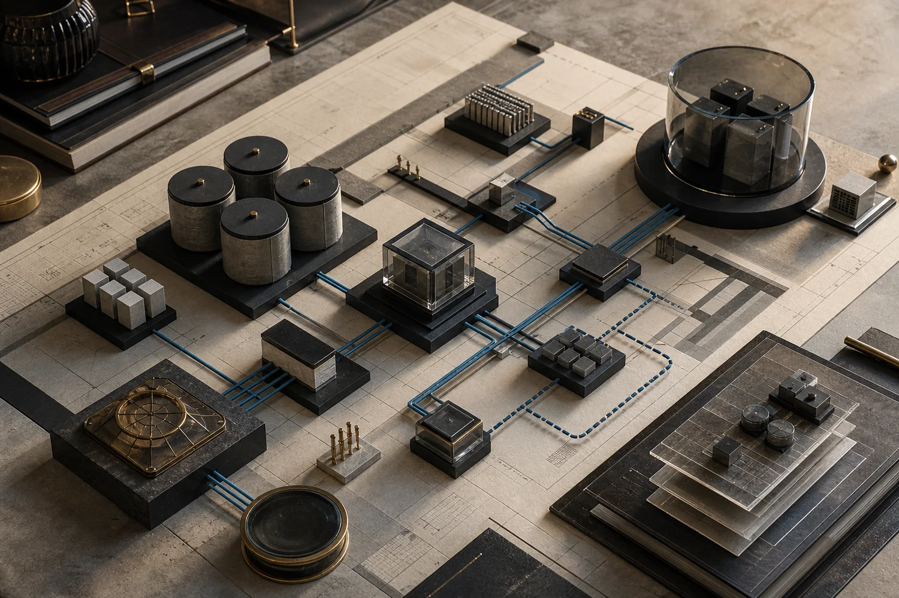

01 / INFRASTRUCTURE & SYSTEMS
基礎架構與系統
盤點現況、整理依賴，讓架構、資料保護與後續維運有共同脈絡。
IT 顧問 · 系統架構規劃 ↗MYK TECH / INDEPENDENT PRACTICETAIWAN · EST. 2023
從 IT Infrastructure、軟體與 AI，到工業零件建模與品牌溝通；先理解限制，再把事情做成真正可用、可維護、可確認的成果。
01 — 工作領域 / Practices
不同問題需要不同證據與工作方法。選擇最接近目前需求的入口，再查看具體服務內容。

盤點現況、整理依賴，讓架構、資料保護與後續維運有共同脈絡。
IT 顧問 · 系統架構規劃 ↗從真實工作流程建立工具、Prototype 與可驗證的 AI 應用。
軟體工具 · AI 應用整合 ↗
依尺寸、安裝與製作限制建立零件、支架與組合關係。
建模 · 裝配 · 實體驗證 ↗整理品牌語氣、社群內容與活動頁面，建立可持續的溝通節奏。
社群經營 · 活動網頁 ↗03 — 工作方式 / Approach
從現場 SI、資料保護、醫療集團 IT 規劃到金融系統 Infrastructure，工作方法一直沒有變：理解限制、確認依賴、留下可延續的成果。
04 — 聯絡洽談 / Contact